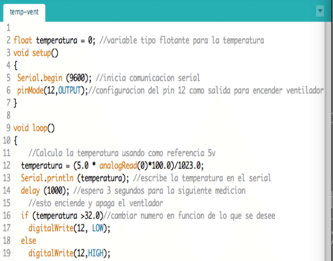

LENGUAJE DE PROGRAMACIÓN C
Índice
¿Que es c?
Historia
Código
¿QUÉ ES?
El lenguaje de programación C se considera como uno de los lenguajes más importantes en la actualidad. Su flexibilidad aporta una gran libertad al programador informático; sin embargo, dispone de una baja comprobación de incorrecciones, por lo que la responsabilidad del profesional es total.
Además del desarrollo de sistemas operativos, C es clave en la creación de apps y sustenta otros lenguajes más actuales como Java, C++ o C#.
Por otro lado, C está compuesto por una base en la que se almacenan las diferentes funciones en forma de bloques de código y así operar en los parámetros marcados.
HISTORIA
Todo comenzó en el año de 1970, en el laboratorio de la empresa Bell, cuando Dennis Ritchie junto a Brian Kernighan empezaron a crear el lenguaje C. Ritchie era colaborador de Ken Thompson, informático que para entonces trabajaba en UNIX (sistema operativo) y quien también había creado el lenguaje B.
Pero, ¿por qué se creó el lenguaje de programación C? El objetivo era encontrar un compilador que garantizará la consistencia y la velocidad de cada terminal, y entender mejor el sistema operativo Unix. En pocas palabras, lo que se quería era un sistema operativo eficiente que pudiera evolucionar sin sufrir vergonzosas ralentizaciones.
Y como todos los mejores descubrimientos, ocurrió uno por casualidad. Estos programadores unieron el BCPL, lenguaje sencillo y rápido, con el B, que en cambio era lento porque estaba lleno de instrucciones. El resultado fue el lenguaje C, y permitió a Thompson abandonar y reescribir completamente a UNIX.
Aunque, en 1972 fue el año más productivo de desarrollo y probablemente cuando se bautizó C. Fue para el año de 1973, que el lenguaje C estaba lo suficientemente maduro como para que el 90% de UNIX pudiera reescribirse con él. Y en 1974, los laboratorios Bell concedieron la licencia de UNIX a las universidades, y así fue como se empezó a distribuir el lenguaje C.
CÓDIGO
